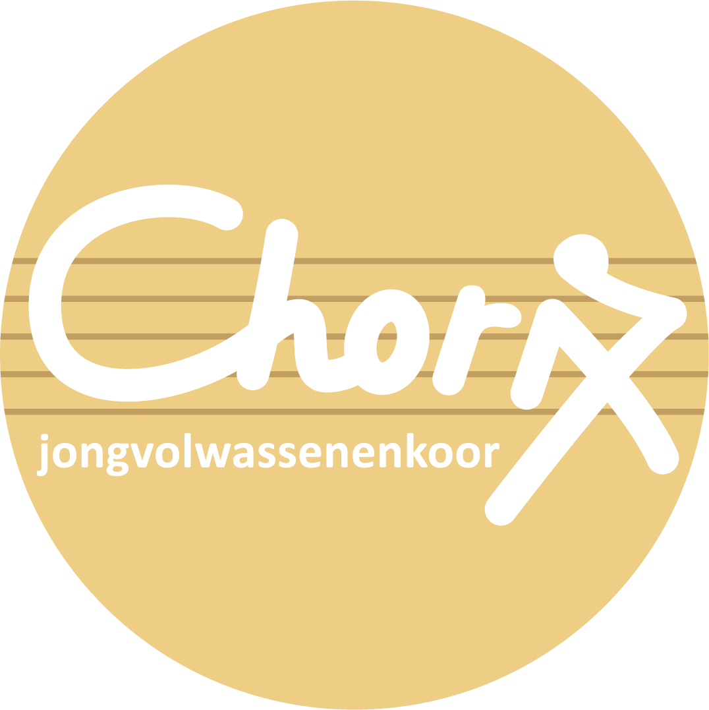

Kinderkoor ChoriX
- Leeftijd: 8 - 12 jaar
- Dirigent: Katrijn Gillis
- Repetitiemoment: donderdag 17u30 - 18u30
-
Repetitielocatie:
Basisschool Sint-Jozef, Ekeren-Donk
Naar de website
Jeugdkoor Rejoice
- Leeftijd: 12 - 25 jaar
- Dirigent: Peter Laureyssens
- Repetitiemoment: zaterdag 19u - 21u
-
Repetitielocatie:
Kleurenboom, Ekeren-Donk
Naar de website

Naar de website
Jongvolwassenenkoor ChoriX
- Leeftijd: 21 - 35 jaar
- Dirigent: Joris Demetsenaere
- Repetitiemoment: donderdag 19u30 - 21u30
-
Repetitielocatie:
Kleurenboom, Ekeren-Donk
Naar de website

Gemengd koor Cantemus
- Leeftijd: 16 - 99 jaar
-
Dirigenten:
Peter Laureyssens en Bastien Van Houdt - Repetitiemoment: vrijdag 20u - 22u
-
Repetitielocatie:
Sint-Eduardus, Merksem
Naar de website